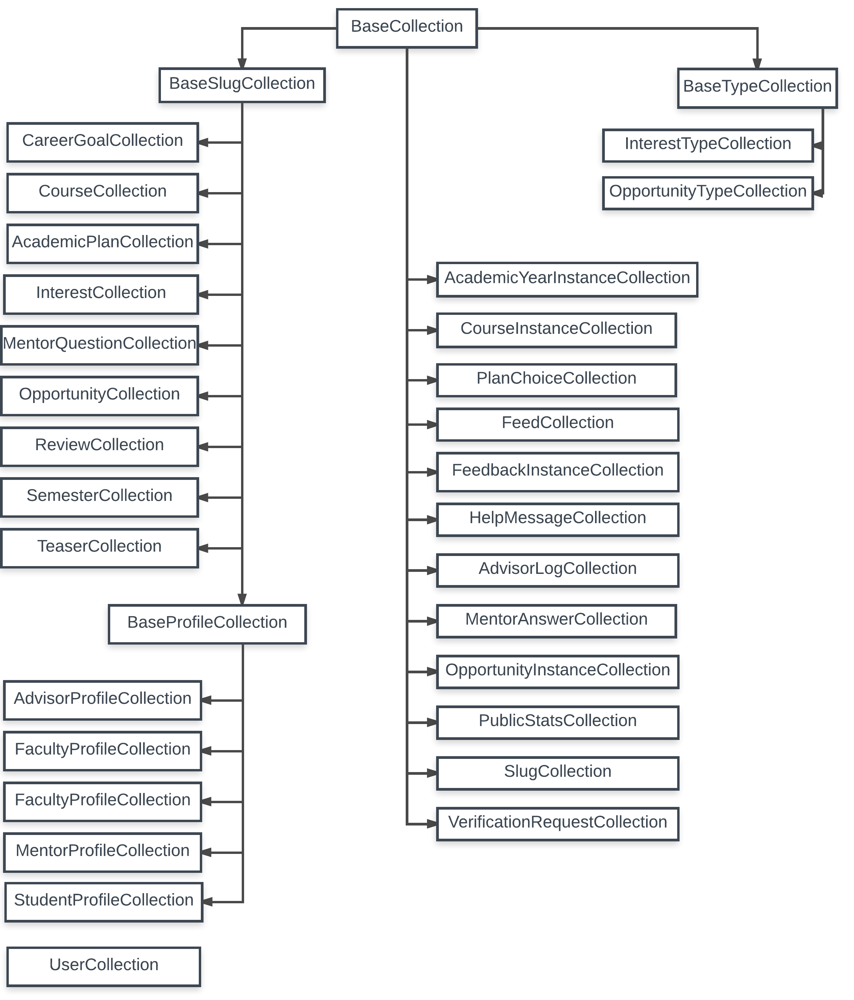

Class Hierarchy
Recall that every MongoDB collection is encapsulated by a Javascript class with the same name.
As we implemented this encapsulation, we observed that there was common functionality that could be abstracted out into a set of four superclasses:
BaseCollection. All classes (with the single exception of the UserCollection class) inherit either directly or indirectly from BaseCollection. This class provides the methods and fields used to manage a MongoDB collection that are common across RadGrad.
BaseTypeCollection. This class extends BaseCollection with methods to support MongoDB collections that specify "types" in RadGrad. Currently, there are two such types: InterestTypes and OpportunityTypes.
BaseSlugCollection. This class extends BaseCollection with methods to support the MongoDB collections whose documents must include a "slug". For more details, see the section on slugs.
BaseProfileCollection. This class extends BaseSlugCollection with the methods common to the implementation of the collections to support RadGrad roles: AdvisorProfileCollection, FacultyProfileCollection, MentorProfileCollection, and StudentProfileCollection.
Here is the resulting class hierarchy:

There is one exceptional class: UserCollection, which does not inherit from any of the Base classes. This is because the UserCollection class encapsulates a "special" MongoDB collection managed by the Meteor.Accounts package. The behavior of this collection is sufficiently different from regular user-defined collections that we did not feel it was appropriate to make it a subclass of any other class.